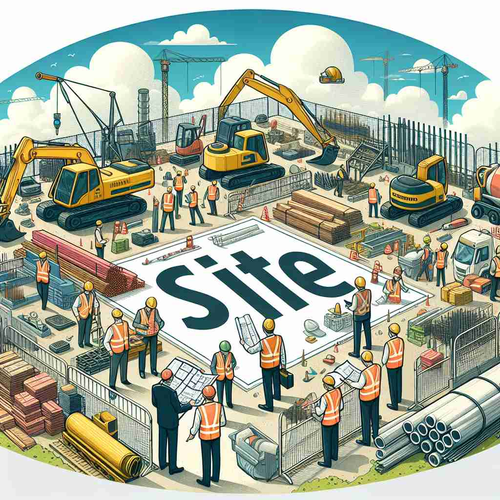

💬 The team is excavating the archaeological site to discover ancient treasures. 团队正在挖掘考古遗址，以发现古代宝藏。

💬 The workers are busy at the construction site near the river. 工人们在河边的建筑工地上忙碌。
💬 The students are excited to take pictures at their old school site. 学生们对于在他们的老校区拍照感到兴奋。

💬 The workers are busy at the construction site. 工人在建筑工地上忙碌。
🧠 想象'site'是一个特定的位置或地点。无论是现实世界中的地点，历史事件发生的地方，还是虚拟世界中的网站，都可以看作是某种"位置"。这个核心概念贯穿了'site'的各种用法，帮助你更容易理解和记忆它的多重含义。
🔈 [saɪt]
🗝️ n. a place where something is, was, or will be located 某物现在、过去或将要被安置的地方
🎭 想象一个建筑施工现场。工程师们在检查地基，为即将建造的高楼进行准备。这片区域将是未来大厦的所在地，体现了'site'作为某物所在地的意义。
💬 They chose the site for the new school building. 他们选择了新学校建筑的地点。
🌳 词根来源于拉丁文 'situs', 意为 '地点'。该词汇本身即可作为名词使用，表示 '地点' 或 '位置'。
🕸️ 1.situate: 位于 2.situation: 情况 3.in situ: 原地，在原位
💡 可以将 'site' 与 'sight' 联想在一起，想象 '在某个位置看到某物'，这有助于记住 'site' 是一个表示位置或地点的单词。